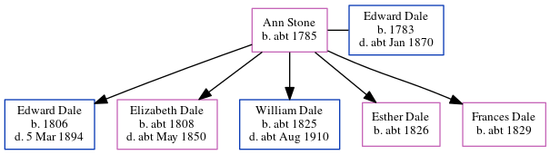

Ann Dale (née Stone) c1785 -
[ Home ] | [ Calendar ] | [ Surnames Index ] | [ Errors ] | [ Family History ]Ann Stone, the 4 times great-grandmother of Nigel Horne, was born in Canterbury, Kent, England c. 1785 and married Edward Dale (an agricultural labourer with whom she had 5 children: Edward, Elizabeth, William, Esther and Frances) at St Mary Bredin's Church in Canterbury on 13 Jul 18061.
During her life, she was living on North Lane, Westgate in Canterbury in 18512 and on 30 Mar 18513.
Children
- Edward was born in 1806
- Elizabeth was born c. 1808
- William was born c. 1825
- Esther was born c. 1826
- Frances was born c. 1829
Citations
- Kent, Canterbury Archdeaconry marriages 1538-1928 - Findmypast
- 1851 England, Wales & Scotland Census - Findmypast
- 1851 England, Wales & Scotland Census - Findmypast (was age 66 and the wife of the head of the household)
Family Tree
Map
Generated by ged2site. Last updated on Jul 3, 2024
Known Issues
Birth date (abt 1785) has no citations